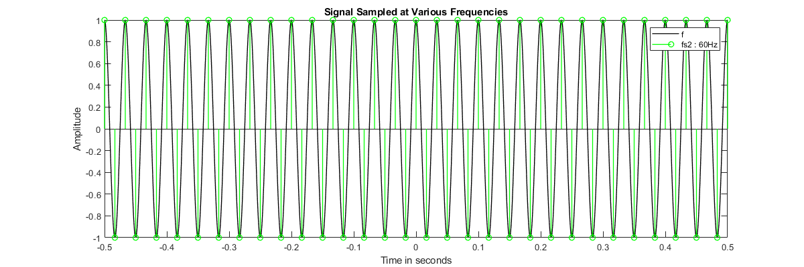

MATLAB assignment 1 - Spencer Durrant
Contents
- 1. Download data by Analysis of human behavior recognition algorithms
- 2. Load the data from the text file into 3 vectors x, y, and z
- 3. Convert the coded data [x, y, z] values to real values. Plot the x,
- 4. Generate a cosine signal c = cos(2πf t) with frequency f = 30Hz
- 5. Generate a cosine signal c = cos(2πf t) with frequency f = 30Hz
1. Download data by Analysis of human behavior recognition algorithms
based on acceleration data, Bruno, B. et al., IEEE Int Conf on Robotics and Automation (ICRA)
2. Load the data from the text file into 3 vectors x, y, and z
corresponding to the acceleration along the different axis.
filePath = "Climb_stairs/Accelerometer-2011-03-24-10-24-39-climb_stairs-f1.txt";
data = readmatrix(filePath);
3. Convert the coded data [x, y, z] values to real values. Plot the x,
y, z components of the signal before and after the conversion.
g = 9.8; % Perform transform on each data point, use equation given % in the assignment details realData = -1.5*g + 3*g .* (data/63); % Plot both figure; subplot plot(data, 'LineWidth', 1.2); hold on; plot(realData, 'LineWidth', 1.2); % Add plot info title('Accelerometer XYZ and Real Data plot') xlabel('Time in seconds'); ylabel('Amplitude'); % Add plot info xlabel('Time in seconds'); ylabel('Amplitude'); legend('x', 'y', 'z', 'real-x', 'real-y', 'real-z') title('Real Data Accelerometer XYZ plot')
4. Generate a cosine signal c = cos(2πf t) with frequency f = 30Hz
defined in the time interval t = [−0.5, 0.5]s. Sample the signal using sampling frequencies fs1 = 80Hz, fs2 = 60Hz, fs3 = 30Hz. Plot the sampled signals and comment as necessary (is there aliasing? etc)
% 10000 sample resolution for time interval to represent continuous signal t = -0.5:0.0001:0.5; f = 30; c = cos(2*pi*f*t); % Sample at 80 Hz, expect this to be a good conversion to discrete-time % Because it is above the Nyquist rate fs1 = 80; ts1 = 1/fs1; ts1 = -0.5:ts1:0.5; cs1 = cos(2*pi*f*ts1); % Sample at 60 Hz, expect this to be an okay conversion to discrete-time % because it is at the Nyquist rate, should at least be correct. fs2 = 60; ts2 = 1/fs2; ts2 = -0.5:ts2:0.5; cs2 = cos(2*pi*f*ts2); % Sample at 30 Hz, this will not be a good conversion to discrete-time. % This will always be 1 or -1 since it uses an equal frequency fs3 = 30; ts3 = 1/fs3; ts3 = -0.5:ts3:0.5; cs3 = cos(2*pi*f*ts3); figure('Position', [100, 100, 1200, 400]); plot(t, c, 'k', 'LineWidth', 1); hold on; stem(ts1, cs1, 'r', 'LineWidth', 1); xlabel('Time in seconds'); ylabel('Amplitude'); title('Signal Sampled at Various Frequencies') legend('f', 'fs1 : 80Hz'); figure('Position', [100, 100, 1200, 400]); plot(t, c, 'k', 'LineWidth', 1); hold on; stem(ts2, cs2, 'g', 'LineWidth', 1); xlabel('Time in seconds'); ylabel('Amplitude'); title('Signal Sampled at Various Frequencies') legend('f', 'fs2 : 60Hz'); figure('Position', [100, 100, 1200, 400]); plot(t, c, 'k', 'LineWidth', 1); hold on; stem(ts3, cs3, 'b', 'LineWidth', 1); % Add plot info xlabel('Time in seconds'); ylabel('Amplitude'); title('Signal Sampled at Various Frequencies') legend('f', 'fs3 : 30Hz');
5. Generate a cosine signal c = cos(2πf t) with frequency f = 30Hz
defined in the time interval t = [−0.5, 0.5]s.Let us sample this using a sampling frequency fs, where fs = 32Hz. Combine this cosine signal with the x component of the mapped signal from Part 3 as xc = x + c. Plot this signal xc.
% sample the signal at 32 Hz fs = 32; ts = 1/fs; ts = -0.5:ts:0.5; c = cos(2*pi*f*ts); % The indices are not aligned, only 33 samples result for c % solution is to use the same inter-sample-intervals, use the same starting % point, and use the same number of samples x = realData(:, 1); % Set new discrete-time vector n to size of samples in x n = 0:length(x)-1; % Generate the cosine signal with this vector, using the corresponding % digital frequency of f/fs cResized = cos(2*pi*(f/fs)*n); % Plot the signal figure plot(x, 'r', 'LineWidth', 1.2) hold on; plot(x' + cResized, 'k', 'LineWidth', 1.2); % Add plot info xlabel('Time in seconds'); ylabel('Amplitude'); title('Real x Versus x + xc') legend('x', 'x+c');